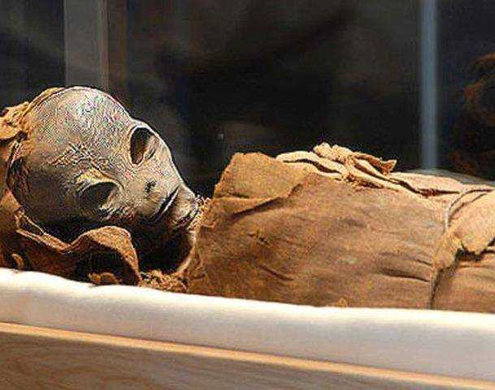
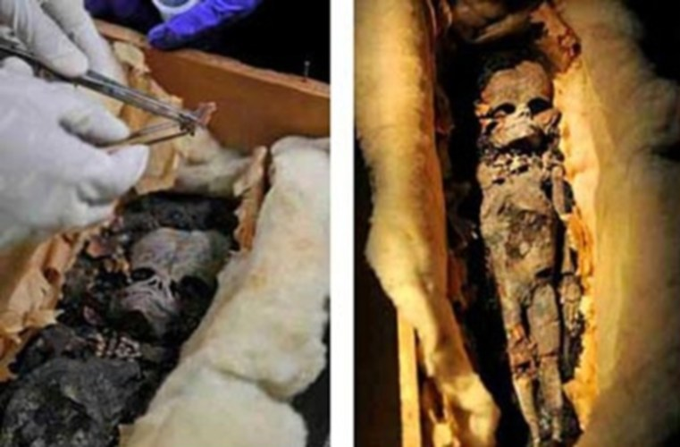
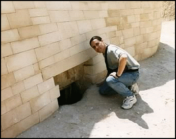
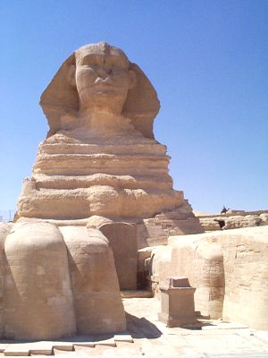
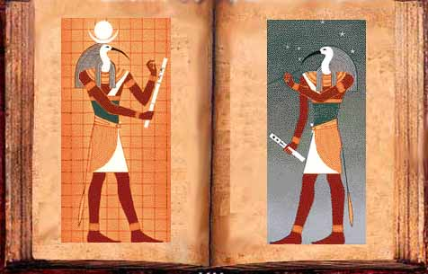
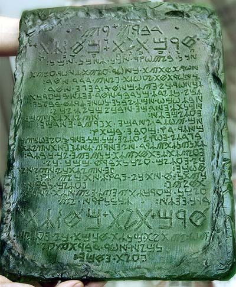
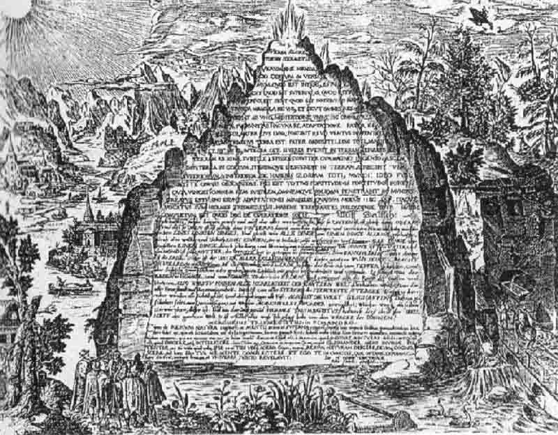

Mummified Alien Discovered in Egypt
A strange story about the Great Pyramid of Giza appeared in the March 2000 issue of the Egyptian magazine Rose El-Yussuf.
According to the article, in 1988, French Egyptologist Louis Caparat, discovered this mummy in 1988 in a secret room of the Great Pyramid and, "was found in a crystalline transparent case. At first the alien appeared to be hibernating," or in a state of suspended animation. It’s believed to be a “humanoid,” which is a mix between an extraterrestrial race and human DNA.
A papyrus found near the body tells of this being’s encounter with the Pharaoh Khufu. Apparently, it said that this convinced the Pharaoh to build the Great Pyramid as a tomb for this being after he had announced the future arrival of other beings of his species (Source: the Egyptian magazine "Rose El-Yussuf" relayed by "The World Of The Unknown" in Issue 283 April 2000).
It was also determined from the papyrus that the people whom lived in Egypt during the Neolithic period was already very mixed, mostly consisting of people from the Mediterranean and Negroid that were dolichocephalic (Greek word meaning to have an elongated head).
The last update on this was that "Caparat sent a message to a colleague in Spain, Francisco de Braga, a biologist, inviting him to come to Egypt" to take blood, cell, tissue and DNA samples from the dead alien." But when Dr. de Braga arrived in Cairo, he was detained by the Egyptian Ministry of State Security and put on a plane back to Madrid. According to Rose El-Yussuf, the dead alien was taken to a laboratory at an undisclosed location by Egyptian military intelligence.
Editor's Note: Please take this story with a grain of salt. Mysterious dead bodies have been turning up in the Great Pyramid since Abdullah Al-Mamun first broke into the Great Pyramid in 813 A.D. Abdullah, who was the son of the famous caliph, Haroun Al-Raschid, hired a crew of Egyptians who laboriously bored a hole right through the Pyramid's wall.
According to author Peter Tompkins:
"Some Arabian authors have reported that Al-Mamun found in the sarcophagus a stone statue in the shape of a man. They say that within the statue lay a body wearing a breastplate of gold set with precious stones, an invaluable sword on his chest, and a carbuncle ruby on his head the size of an egg, which shone as with the light of day." - Secrets of the Great Pyramid by Peter Tompkins
On the other hand, there have been a lot of strange goings-on at the Great Pyramid since 1996, including secret UNESCO teams visiting, unmarked military vehicles and black helicopters seen at Giza, and the recent round of heavy construction.. It's anyone's guess what is really going on out there.


Another mummified alien (5’ 3”) was also found buried in an ancient pyramid, but this time by the archaeologist, Dr. Viktor Lubek. This one was found near Lahun, when exploring a small pyramid south of the Dynasty doceaba of Senusret II, which contains the queen of the pharaoh. This of course was not revealed immediately to the public either, and dates back to about 1880 B.C. According to a source at the Egyptian Antiquities Department, “The mummy of what appears to be an alien, dates back (to about 1880 B.C.) and it seems it would be a humanoid.” Apparently this statement, along with details and photographs of the find, were made under the condition of remaining anonymous. Inscriptions on the tomb of the mummy showed that this being was a counselor to the pharaoh and was named Osirunet, meaning “star” or “sent from heaven.” The body was said to be buried with great respect and care, and was accompanied by a number of strange artifacts made of a synthetic material that is not found in any other Egyptian tomb. Also the source claimed, "It's unclear what sex it was, but we do know it had unusual reptilian-type skin, no external ears and overly large, almond-shaped eyes.”
The anonymous person that provide this find’s details claimed that the discovery has caused great controversy among Egyptian officials, who want to keep it hidden until a “plausible explanation” for the strange mummy can be made. The Egyptian government has consulted a number of respected archaeologists, but to date none can explain the finding in ordinary terms. According to the source, “The Egyptians refuse to believe that their heritage came from outer space.” The last update on this was that the mummy was to be flown to a university in Florida where specialists will examine it more closely.



It turns out that the CIA has banned archaeologists to excavate in certain areas. Some journalists had already noticed that the CIA was very interested in making their own excavations before the ban was put in place. So far there are three “hidden” openings around the Sphinx that lead to underground tunnels that are prohibited. One opening is located in-between the two front paws, another on the south side, and one on the north side.
According to the British journalist Graham Hancock, the CIA has discovered not one, but 9 chambers under the Sphinx, some of which containing metal objects. These hidden underground chambers were actually recorded in the Emerald Tablets that were supposed to be written by Thoth/Hermes. The Emerald Tablets were said to be each molded out of a single piece of emerald (green) crystal, with its true origin (possible Atlantis) lost in legends that go back over 10,000 years. Its first known translation was made into Greek by Alexandrian scholars and was actually put on display in Egypt in 330 B.C. However, around 400 A.D. it was reportedly buried somewhere on the Giza plateau to protect it from religious zealots who were burning libraries around the world at that time.




If the intelligence agencies want to get their hands on a device or documents, it means they think that the civilization of ancient Egypt was, in some areas, much more advanced than ours. Two of the most well-known descriptions of aliens mating with humans, thereby creating humanoids, comes from Robert Temple’s “The Sirius Mystery” (which tells the story of the African Dogon Tribe) and Genesis in the Bible.
“The son of God saw the daughters of men were beautiful, and they took them wives which they chose among them. (...) There were giants in the earth in those days, and also later, because the son of God came in unto the daughters of men, and they bare children: these are powerful men who, from ancient times, were men of renown "(Genesis 6: 2-4)
Greek mythology refers to these giants as Nephilim, or fallen angels who have taught men: math, writing, music, witchcraft/alchemy, astrology, etc. These lessons were also listed in the Kabbalah, which caused many crusades to chase these secrets in Jerusalem.
Wisdom-Square › Our True History › Mummified Alien Discovered in Egypt